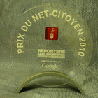
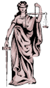
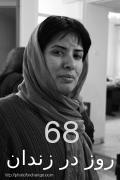
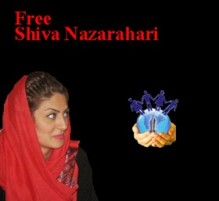
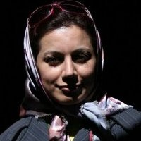
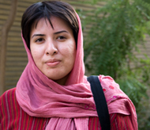
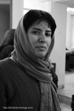
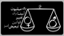
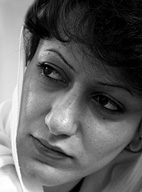
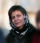
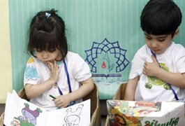
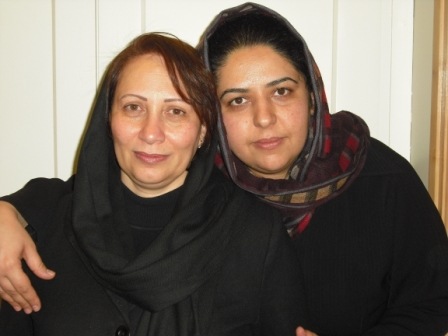
Abbas Hakimzadeh Still in Prison, Mahdieh Golroo, Saeed La’lipour, Milad Asadi and Majid Tavakoli Arrested
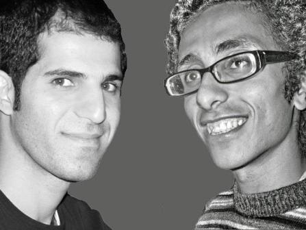
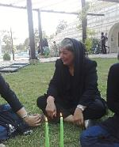
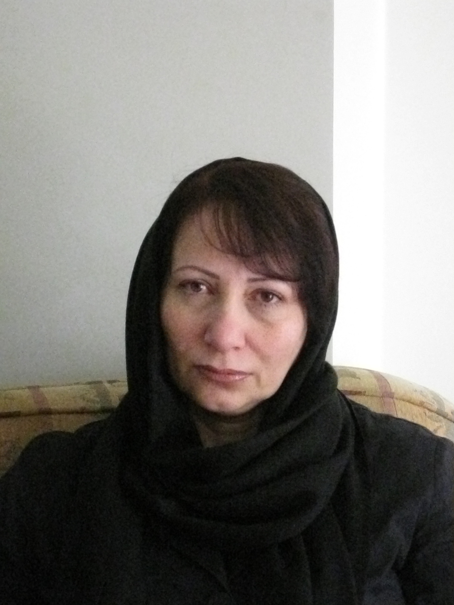
0 | ... | 30 | 60 | 90 | 120 | 150 | 180 | 210 | 240 | 270 | ... | 420
0 | ... | 35 | 40 | 45 | 50 | 55 | 60 | 65 | 70 | 75 | 80